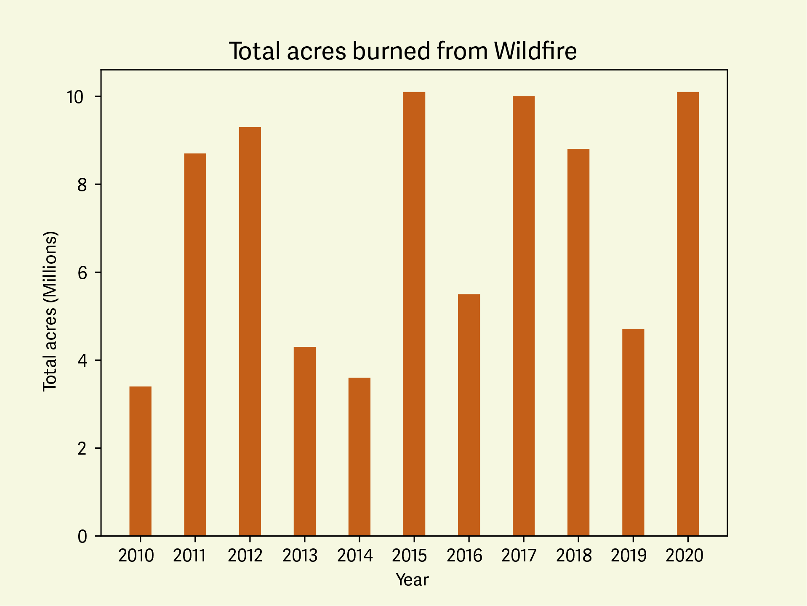
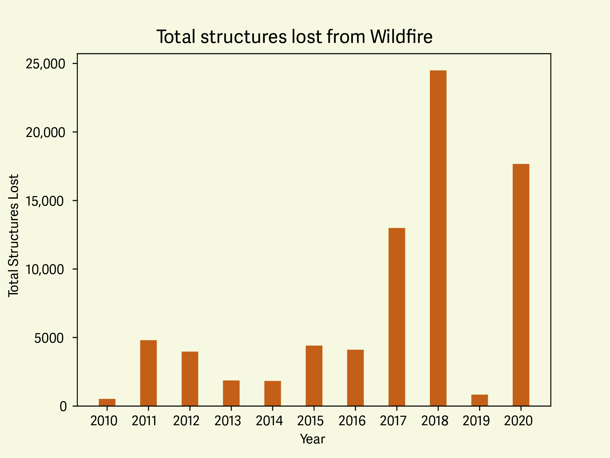

Wildfire in the Wildland Urban Interface
And how to prepare for wildfire in the WUI
And how to prepare for wildfire in the WUI
What is the Wildland Urban Interface or WUI? And why is it important to understand the risks associated with living in the WUI?
The WUI is the zone of transition between unoccupied land and human development. It is the line, area or zone where structures and other human development meet or intermingle with undeveloped wildland or vegetative fuels.
Continue scrolling to learn about past wildfires that have left destruction in their burn scar, and learn about the actions you can take to prepare your home and community from wildfire in the WUI.

Out of the approximately 140 million homes in the US, just over 40 million are located in the Wildland Urban Interface.

Wildfire severity happens on a somewhat cyclical basis, however with temperatures and drought becoming more extreme, fire seasons are lasting longer. With more severe fire seasons, acres burned will potentially increase as well.

From 2010-2020, structures destroyed by wildfire increased, with the worst year being 2018 where nearly 25,000 structures were lost due to wildfire.
The Waterfall fire burned 8 thousand acres and destroyed _ structures outside Carson City, and started in the cities designated Wildland Urban Interface Zone.
The Bridger Foothills fire started from a lighting strike on the southwestern portion of the bridger mountain range, crossing over the ridge and burning north into bridger canyon, a major WUI zone with expensive homes.
The breachie creek fire was pushed with strong eastern winds and grew to be __ acres, destroying many structures in its wake.
If you reside in the WUI, have a plan in place for when a wildfire starts in your community. Defensible space around your home may help protect it from going up in flames. An emergency action plan will allow you to evacuate quickly and efficiently, with the confidence that you have done everything in your power to save your home.
Provide description of defensible space here and link resources for more knowledge